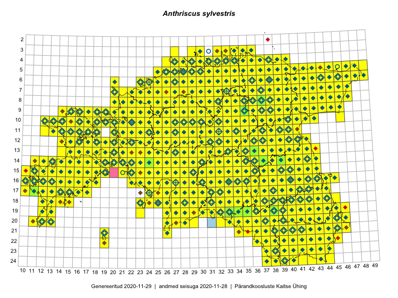

Anthriscus sylvestris
Uuendatud: 2016-12-02
Kaardile koondatud taksonid: Anthriscus sylvestris (L.) Hoffm.

Kaart põhineb 1563 vaatlusel. Taksonit on leitud 523 ruudust.
Kuvatud viited 20 esimesele andmebaasikirjele, ülejäänud PlutoFis
- Thea Kull: 2015-04-25: 05-41: ala
- Thea Kull: 2015-04-25: 05-41: ala
- Toomas Kukk: 2015-06-19: 06-27: ala
- Thea Kull: 2015-04-27: 07-45: ala
- Thea Kull: 2015-04-27: 07-45: ala
- Malle Leht: 2015-05-22: : ala
- Malle Leht: 2015-05-16: : ala
- Tiit Hallikma, Toomas Kukk, Indrek Tammekänd: 2015-06-09: 12-28: ala
- Malle Leht: 2015-07-09: : ala
- Meeli Mesipuu, Liina Oja: 2015-04-27: 08-43: ala
- Peedu Saar: 2015-05-09: 13-30: ala
- Peedu Saar: 2015-05-14: 09-43: ala
- Peedu Saar: 2015-05-14: 10-43: ala
- Toomas Kukk: 2015-06-23T14:30Z: 21-45: ala
- Toomas Kukk, Eerik Leibak: 2015-08-09: 13-15: ala
- Thea Kull: 2015-07-07: 16-40: ala
- Rein Kalamees: 2015-06-08: 05-32: ala
- Peedu Saar, Liina Oja: 2015-05-20: 18-27: ala
- Rein Kalamees: 2015-06-05: 05-32: ala
- Malle Leht: 2015-08-02: : ala